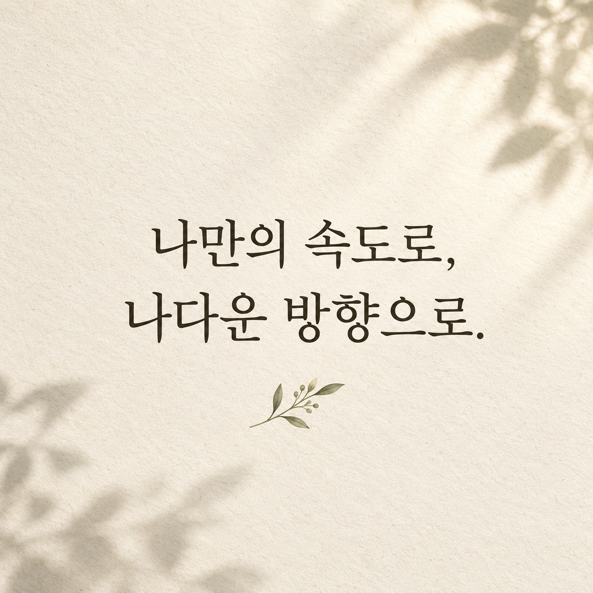

PUBLISHING
WEB DESIGN실기를 따라가는
학습서415 pages
학습서415 pages
출판 · 학습 콘텐츠
415쪽 웹디자인 실기 학습서
웹디자인개발기능사 실기 내용을 구성해 출판용 PDF 원본을 완성하고, 판매용 미리보기도 제작했습니다.
415쪽 출판 원본판매용 미리보기
학습 내용을 정리할 때는 읽는 사람의 순서를 생각합니다. 디지털 경험을 만들 때는 실제로 누르고 듣고 말해 보며 흐름을 확인합니다. 기획, 제작, 검토를 오가며 하나의 결과를 끝까지 다듬어 왔습니다.

완성한 산출물과 현재 구현된 범위를 기준으로 소개합니다.
웹디자인개발기능사 실기 내용을 구성해 출판용 PDF 원본을 완성하고, 판매용 미리보기도 제작했습니다.
‘한국어 한입’ 시제품에 듣기, 음절 탐색, 한글 발견, 다시 말하기를 구성하고 음성과 녹음을 연결했습니다.
Creator Platform에서 콘텐츠, 상품, 주문과 신청의 흐름을 설계하고 구현하며 실제 사용 흐름을 검토했습니다.
작은 아이디어를 실제로 쓰이는 결과까지 이어갑니다.
실기 과정을 읽고 따라갈 수 있는 학습서로 정리했습니다.
언어 학습의 한 문장을 화면, 음성, 녹음으로 구체화했습니다.
PDF의 원본 일치, 앱의 기능, 서비스의 사용 흐름을 점검합니다.